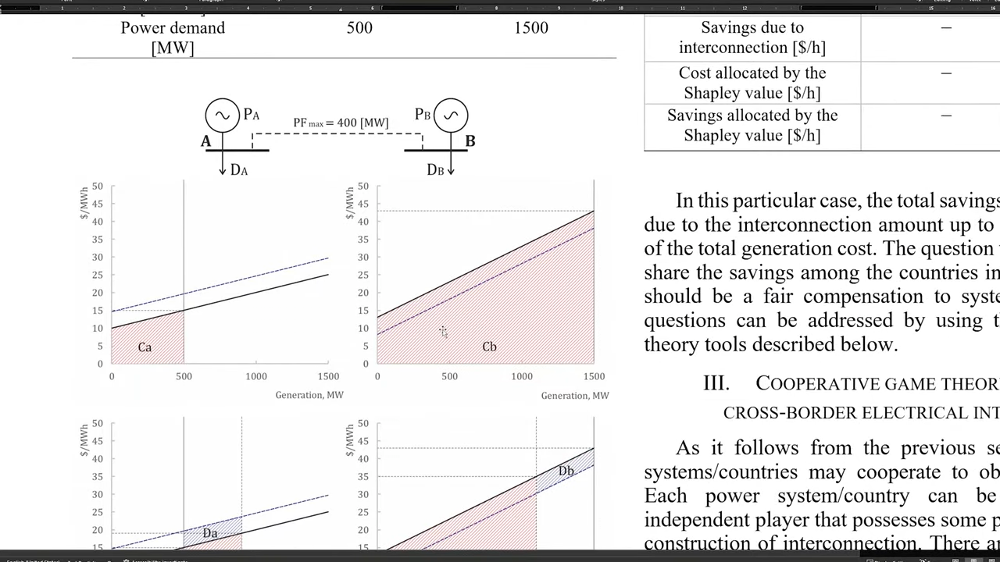
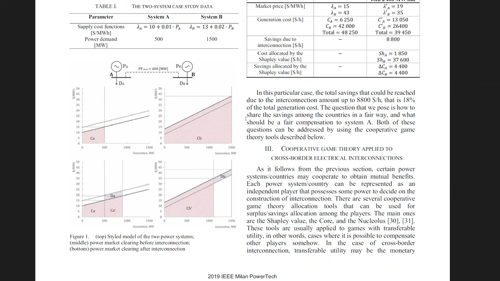

Principles of Beautiful Figures for Research Papers
Table of Contents
- Readability
- Simplification & Decluttering
- Colors
- Message and story
- Consistent style
- Figures to avoid
- Time
1. Use Vector Graphics
1.1. Downscaled while publishing
00:06:25 Raster figures might look good in your computer, but the journal may compress the image to reduce size of the pdf and then the images will look blurry and unreadable.
Vector graphics don't get scaled down.

Figure 1: Original Good Figure

Figure 2: Blurry Figure after Publishing
- 00:13:50 Sometimes a vector graphics is not possible.
- For example, because of large number of data points. In those case some part of figure might be raster graphics and other parts like tile, axes, labels can be vector.
2. Readable Fonts
Readers should not need to zoom in to read the labels and texts in the figure.
00:15:08 If in your journal template the smallest font is 8pt, then your figures should not include fonts smaller than 8pt.
Bad examples:
3. Colors
- 00:32:28 Design without colors first so that you get your layout right.
- 00:34:01 Be careful about using bright colors.
- Bright colors don't look great together,
- They don't look great in scientific papers (?)
- 00:34:19 Be careful about using complementary colors .
- Because they cancleout each other, and are unpleasant to the eyes when put together (e.g. 00:36:40)
00:35:14 Use analogous colors (they sit near each other in color wheel)
Some tools to choose/create such colors are:
- Adobe Color wheel
- https://color-hex.com
00:40:09 Colors can be used psychologically
- Red for wrong or for something that is associated with red (e.g. fire (00:43:13))
- Green for correct
E.g. if you are using red in your figure, readers might get confused i.e. think that you are trying to show something wrong
- 00:40:49 Don't use yellow color. Because it looks bad (easily lost) on white background.
- 00:42:22 In some cases using too many colors (e.g. rainbow color scheme) can make the data difficult to analyze